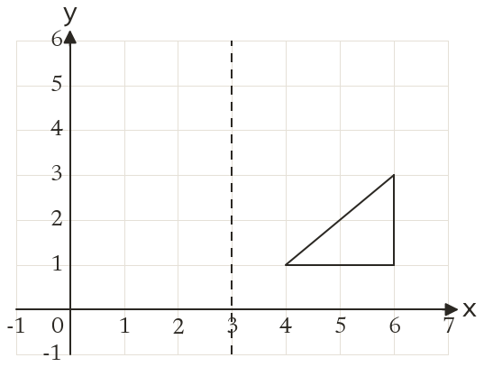
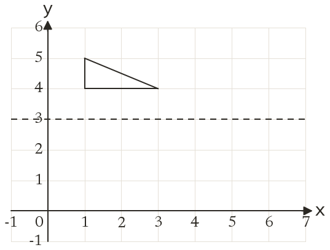
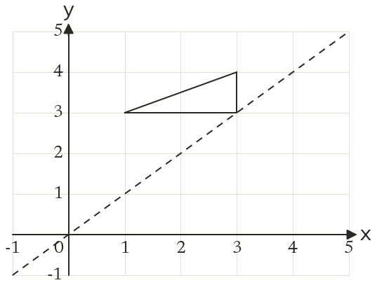
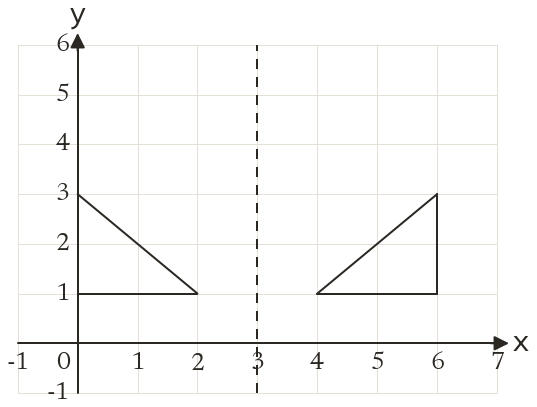
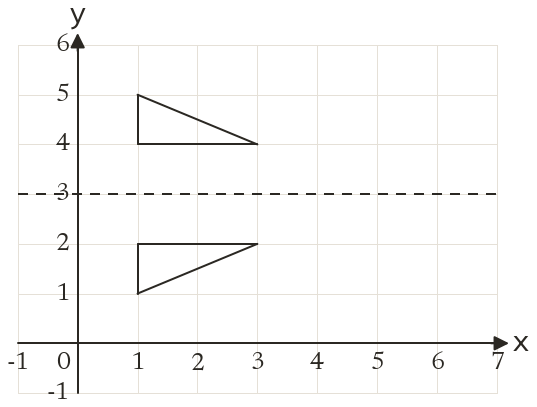
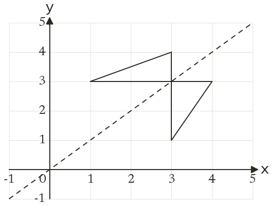

Westonbirt Maths · Transformations
Translations and Reflections
Name: ______________________ Date: ____________
1
Reflect the triangle in the line x = 3.
2
Reflect the triangle in the line y = 3.
3
Reflect the triangle in the line y = x.
4
Reflect the point (5, -2) in the line y = -x.
5
Which of these points do not move when reflected in x = 2? (2, 5), (5, 2), (2, -1)
Ext
Reflect (3, 1) in the line x = 5, then reflect the image in the line y = 0.





